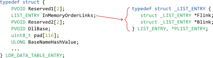
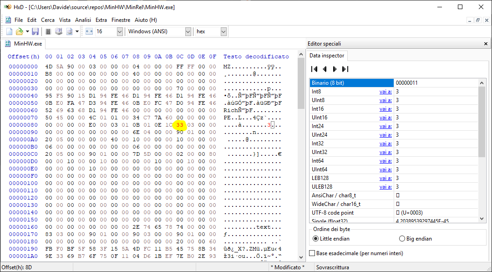
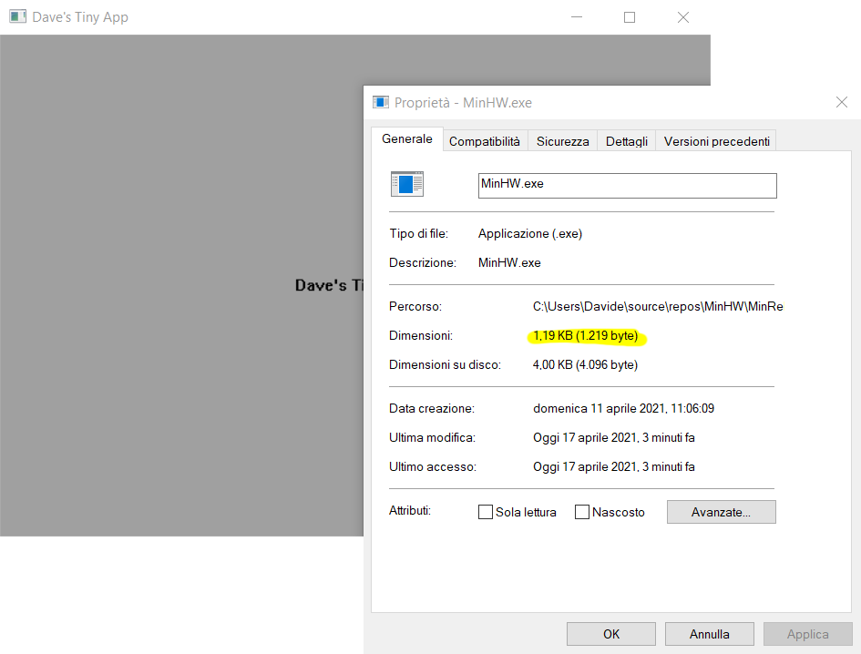
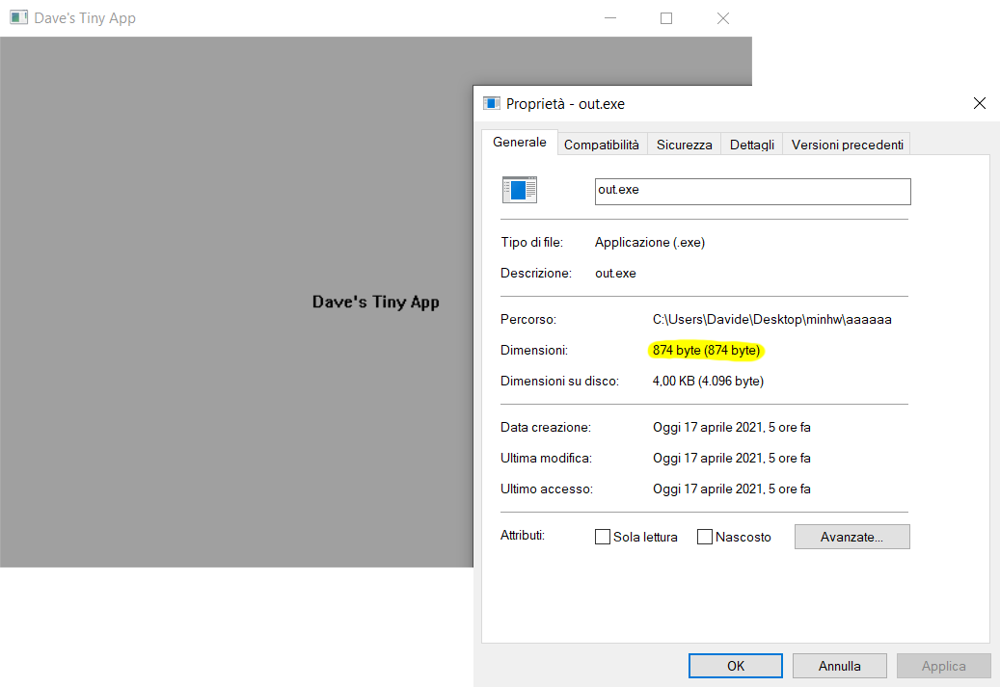

kernel32.dll base addresskernel32.dll you can do virtually everything (I'm talking about LoadLibrary and GetProcAddress).kernel32.dll is automatically loaded in each Windows' process address space, right before being executed. This means that, technically, we should be able to poke around in the process address space to find the kernel32.dll APIs that we need.
TEB, which contains a lot of information about the process itself. Now bear with me:
FS register contains a pointer to the TEBTEB contains a pointer to the Process Environment Block (PEB)PEB contains a pointer to the PEB_LDR_DATA structPEB_LDR_DATA struct contains an InMemoryOrderModuleListInMemoryOrderModuleList contains something really useful: the base address where kernel32.dll is loaded into memory!
Now replace "modules" with DLLs and you can get an idea of what we are going to do. Actually,InMemoryOrderModuleListis the head of a [circular] doubly-linked list that contains the loaded modules for the process. Each item in the list is a pointer to anLDR_DATA_TABLE_ENTRY.
InMemoryOrderModuleList contains pointers to LIST_ENTRYs. Each LIST_ENTRY is wrapped in an LDR_DATA_TABLE_ENTRY.

Pay attention to the first PVOID field: that's the reason why we can't brutally cast the LIST_ENTRY to an LDR_DATA_TABLE_ENTRY, but we need to take care of that "extra padding".
LDR_DATA_TABLE_ENTRY in winternl.h. The problem is that said definition only exposes very few of the actual fields. However, playing with Microsoft-provided debug symbols, you can find a lot more "undocumented" fields that we need. I decided to define my own version of the struct (shown above). As you can notice, there's a 116 byte padding pad. This is because there are a few dozen fields between DllBase and BaseNameHashValue that we don't really care about.
initAPI function#define KERNEL32DLL_HASH 0x536CD652u
typedef struct {
PVOID Reserved1[2];
LIST_ENTRY InMemoryOrderLinks;
PVOID Reserved2[2];
PVOID DllBase;
uint8_t pad[116];
ULONG BaseNameHashValue;
} MY_LDR_DATA_TABLE_ENTRY;
void initAPI(...) {
PPEB peb = __readfsdword(0x30);
uintptr_t kernel32Base = 0;
for (
PLIST_ENTRY ptr = peb->Ldr->InMemoryOrderModuleList.Flink;
kernel32Base == 0;
ptr = ptr->Flink)
{
MY_LDR_DATA_TABLE_ENTRY *e = CONTAINING_RECORD(ptr, MY_LDR_DATA_TABLE_ENTRY, InMemoryOrderLinks);
if (e->BaseNameHashValue == KERNEL32DLL_HASH)
kernel32Base = (uintptr_t)e->DllBase;
}
...
}LDR_DATA_TABLE_ENTRY with a MY_ suffix to avoid namespace clashes__readfsdword is an MSVC intrinsic that behaves like:
MOV EAX, FS[0x30]
MOV peb, EAX
0x30 is the offset of the PEB pointer in the TEB
CONTAINING_RECORD is a macro that "casts" the LIST_ENTRY pointer to an LDR_DATA_TABLE_ENTRY pointer, taking care of the "extra padding"
e->BaseNameHashValue contains the hash of the base name of the DLL file. In this case: \(hash\_func(“kernel32.dll”)=0x536CD652\)
e->DllBase contains the base address where the DLL is loaded into memory. If NULL, then we are dealing with the list head.
kernel32.dll is loaded in memory. Let's move on.
uint32_t djb2(uint8_t* str) {
uint32_t hash = 5381;
uint8_t c;
while (c = *(str++))
hash = ((hash << 5u) + hash) + c;
return hash;
}kernel32.dll:
uint32_t Kernel32Hashes[] = {
0x5FBFF0FBu,
0x5A153F58u,
0xB511FC4Du,
0x348B7545u,
0xB769339Eu
};typedef HMODULE(__stdcall* GetModuleHandleA_t)(LPCSTR);
typedef LPSTR(__stdcall* GetCommandLineA_t)();
typedef void(__stdcall* GetStartupInfoA_t)(LPSTARTUPINFOA);
typedef void(__stdcall* ExitProcess_t)(UINT);
typedef HMODULE(__stdcall* LoadLibraryA_t)(LPCSTR);__stdcall is a calling convention, used by almost all Windows APIs.
#pragma pack(push, 1)
typedef __declspec(align(1)) struct {
LoadLibraryA_t _LoadLibraryA;
GetModuleHandleA_t _GetModuleHandleA;
GetCommandLineA_t _GetCommandLineA;
GetStartupInfoA_t _GetStartupInfoA;
ExitProcess_t _ExitProcess;
...
} API;
#pragma pack(pop)#pragma pack(push, 1) & #pragma pack(pop) to avoid putting extra padding between our struct fields and avoid reordering them__declspec(align(1)) to force a 1 byte alignment (instead of 4), to save space#defines to mess up.
DllBasePE header positionPE headerExport table RVAExport tableExported functions (the number of exported functions)Address table RVAName pointer table RVAOrdinal table RVAfindFunc function#pragma pack(push, 1)
struct dll_info {
uint32_t exported_functions;
uintptr_t address_table_RVA;
uintptr_t name_pointer_table_RVA;
uintptr_t ordinal_table_RVA;
};
#pragma pack(pop)
void findFunc(uintptr_t dllBase, uint32_t* hashes, void** ptrs, size_t size) {
uintptr_t PE_RVA = *(uintptr_t*)((uint8_t*)dllBase + 0x3Cu);
uintptr_t PE = dllBase + *(uintptr_t*)((uint8_t*)dllBase + 0x3Cu);
uintptr_t export_table_RVA = *(uintptr_t*)((uint8_t*)PE + 0x78u);
struct dll_info *dll = (uint8_t*)dllBase + export_table_RVA + 0x18u;
uintptr_t name_pointer_table_entry_RVA = dll->name_pointer_table_RVA;
uint32_t i, j;
uintptr_t ordinal_function_RVA;
uint16_t ordinal_function;
uintptr_t function_RVA;
for (i = 0; i < dll->exported_functions; i++, name_pointer_table_entry_RVA += 4) {
uintptr_t function_name_RVA = *(uintptr_t*)((uint8_t*)dllBase + name_pointer_table_entry_RVA);
char* function_name = (uint8_t*)dllBase + function_name_RVA;
uint32_t function_hash = djb2(function_name);
for (j = 0; j < size; j++) {
if (function_hash == hashes[j]) {
ordinal_function_RVA = dll->ordinal_table_RVA + i * 2;
ordinal_function = *(uint16_t*)((uint8_t*)dllBase + ordinal_function_RVA);
function_RVA = *(uintptr_t*)((uint8_t*)dllBase + dll->address_table_RVA + ordinal_function * 4);
ptrs[j] = (uint8_t*)dllBase + function_RVA;
break;
}
}
}
}findFunc takes as its inputs:
void ** array. For example, after the function is executed:
\[hashes[0]=djb2(“LoadLibraryA”)=\text{0x5FBFF0FB} \Longrightarrow ptrs[0] = \text{function pointer to LoadLibraryA}\]
A couple of things you might want to understand:
struct dll_info is used to read its 4 fields from the DLL all at once (they are contiguous)uint8_t * is used because we can't do pointers arithmetic on void *for body, we multiply i by 2 because sizeof(ordinal) = 2ordinal_function by 4 because sizeof(address) = 4kernel32.dll APIsAPI struct the function pointers to the kernel32.dll functions.
API struct is packed we can modify our initAPI function as follows:
void initAPI(API* api) {
PPEB peb = __readfsdword(0x30);
uintptr_t kernel32Base = 0;
for (
PLIST_ENTRY ptr = peb->Ldr->InMemoryOrderModuleList.Flink;
kernel32Base == 0;
ptr = ptr->Flink)
{
MY_LDR_DATA_TABLE_ENTRY *e = CONTAINING_RECORD(ptr, MY_LDR_DATA_TABLE_ENTRY, InMemoryOrderLinks);
if (e->BaseNameHashValue == KERNEL32DLL_HASH)
kernel32Base = (uintptr_t)e->DllBase;
}
findFunc(kernel32Base, Kernel32Hashes, &api->_LoadLibraryA, ARRAYSIZE(Kernel32Hashes));
}ARRAYSIZE is a macro imported by including windows.h, which returns the length of a static array.
user32.dll and gdi32.dll APIsuser32.dll and gdi32.dll.kernel32.dll. We can use a trick however: the LoadLibrary function exported by kernel32.dll.LoadLibrary loads a DLL by its file name and returns an HMODULE, which, in fact, is just a PVOID, pointing to the DLL base address: we can cast it to a uintptr_t and use it in our findFunc.
user32.dll and gdi32.dllAPI struct to save the pointersinitAPI function needs to be changed accordingly:
void initAPI(API* api) {
PPEB peb = __readfsdword(0x30);
uintptr_t kernel32Base = 0;
for (
PLIST_ENTRY ptr = peb->Ldr->InMemoryOrderModuleList.Flink;
kernel32Base == 0;
ptr = ptr->Flink)
{
MY_LDR_DATA_TABLE_ENTRY *e = CONTAINING_RECORD(ptr, MY_LDR_DATA_TABLE_ENTRY, InMemoryOrderLinks);
if (e->BaseNameHashValue == KERNEL32DLL_HASH)
kernel32Base = (uintptr_t)e->DllBase;
}
findFunc(kernel32Base, Kernel32Hashes, &api->_LoadLibraryA, ARRAYSIZE(Kernel32Hashes));
HMODULE user32 = api->_LoadLibraryA("USER32.DLL");
findFunc((uintptr_t)user32, User32Hashes, &api->_LoadIconA, ARRAYSIZE(User32Hashes));
HMODULE gdi32 = api->_LoadLibraryA("GDI32.DLL");
findFunc((uintptr_t)gdi32, &Gdi32Hash, &api->_SetBkMode, 1);
}findFunc call we just pass 1 as the array size, since we need just 1 function in gdi32.dll. You can find the new function pointers definition here and the new hashes here.
/permissive- /ifcOutput "MinRel\" /GS- /analyze- /W3 /Gy /Zc:wchar_t- /Gm- /O1 /Ob0 /sdl- /Fd"MinRel\vc142.pdb" /Zc:inline /fp:precise /D "WIN32" /D "NDEBUG" /D "_CONSOLE" /fp:except- /errorReport:prompt /GF /WX- /Zc:forScope /arch:IA32 /Gd /Oy /Oi /MD /FC /Fa"MinRel\" /nologo /Zl /Fo"MinRel\" /Os /Fp"MinRel\MinHW.pch" /diagnostics:column/OUT:"C:\Users\Davide\source\repos\MinHW\MinRel\MinHW.exe" /MANIFEST:NO /PDB:"C:\Users\Davide\source\repos\MinHW\MinRel\MinHW.pdb" /DYNAMICBASE:NO /MACHINE:X86 /ENTRY:"main" /WINMD:NO /OPT:REF /SAFESEH:NO /INCREMENTAL:NO /PGD:"C:\Users\Davide\source\repos\MinHW\MinRel\MinHW.pgd" /SUBSYSTEM:WINDOWS /MANIFESTUAC:NO /ManifestFile:"MinRel\MinHW.exe.intermediate.manifest" /LTCGOUT:"MinRel\MinHW.iobj" /OPT:ICF /ERRORREPORT:PROMPT /NOLOGO /ALIGN:16 /NODEFAULTLIB /TLBID:1 /MERGE:.rdata=.text /MERGE:.data=.text /EMITPOGOPHASEINFO /RELEASE /STUB:"$(MSBuildProjectDirectory)\stub.bin"/DYNAMICBASE:NO → removes the relocation table from the EXE/ENTRY:"main" → sets a custom entry point/ALIGN:16 → sets the alignment of each section in the EXE, we can't go lower than 16 bytes/NODEFAULTLIB → avoids using the standard linked library/EMITPOGOPHASEINFO → removes some additional debug information (undocumented)/MERGE → merges different sections/RELEASE → along with /EMITPOGOPHASEINFO removes all debug information/STUB → specifies a custom DOS stub (a small custom MZ EXE)SizeOfCode field in the IMAGE_OPTIONAL_HEADER. To put it simply, just go to offset 0x8C and decrease whatever you find (0x90 in my case) by the number of bytes we removed earlier (0x5D):

We end up with a fully working 1219 bytes executable.

So, the executable is roughly \(18.1\%\) smaller than the original 1488 bytes one. Not bad. But can we do better?
MOV instruction has to be used to fill each struct's field and this takes quite some space. On the other hand, if the struct is stored in the BSS or the data section, the whole section is just copied in memory in one go when the executable starts.WNDCLASSEX in the global scope. This saved a bunch of bytes (I can't remember exactly how many).
Crinkler is an executable file compressor (or rather, a compressing linker) for Windows for compressing small demoscene executables. As of 2020, it is the most widely used tool for compressing 1k/4k/8k intros.I was quite skeptical at the beginning: approximately 1200 bytes is very small by today's standards, maybe we can't go lower. But guess what? There's always room for improvement.
Crinkler.exe /NODEFAULTLIB /ENTRY:main /SUBSYSTEM:WINDOWS /TINYHEADER /NOINITIALIZERS /UNSAFEIMPORT /ORDERTRIES:1000 /TINYIMPORT /LIBPATH:"C:\Program Files (x86)\Windows Kits\10\Lib\10.0.18362.0\um\x86" MinHW.obj api.obj kernel32.lib/NODEFAULTLIB, /ENTRY and /SUBSYSTEM behave exactly the same as with the Microsoft linker/TINYHEADER → uses an alternative compression algorithm which is beneficial for extremely small file/NOINITIALIZERS → disables some C++-related features. We are using plain C, we don't need them/UNSAFEIMPORT → avoid displaying a MessageBox if an import fails, generating a smaller executable/ORDERTRIES → specifies how many section reordering iterations Crinkler will try/TINYIMPORT → enables a more compact function importing scheme/LIBPATH → add a new library search pathkernel32.lib because Crinkler emits some code that needs to be linked against it. If you have a Windows 10 SDK installed, you can find your x86 kernel32.lib file under:
C:\Program Files (x86)\Windows Kits\10\Lib\<version>\um\x86<version> with the newer version you have installed.
874 bytes
 This means that the new executable is:kernel32.lib as discussed here and edit build.bat accordinglycd into the directory where you extracted the zipbuild.batMinRel\MinHW.exe → the EXE linked without Crinklerout.exe → the EXE linked with Crinkler